繁华平台实行上下级代理制度，如果您想成为代理，请联系您的上级代理了解详情。
如果您没有上级代理的直接联系方式，可以通过繁华平台的“站内信”功能，发送站内信联系您当前的上级代理咨询详情。
发送站内信的方法如下：
1、在平台首页的右上角有一个信封标志的图案（如下图所示），点击信封标志，进入站内信。
2、画面跳转至“站内信”页面，您可以在左侧栏位选择您的上级或下级的账户名，之后可以通过单聊或者群发的方式给您的上下级发送站内信。
平台目前只提供发送站内信的方式联系上下级。
1、在平台首页的右上角有一个信封标志的图案（如下图所示），点击信封标志，进入站内信。
2、画面跳转至“站内信”页面，您可以在左侧栏位选择您的上级或下级的账户名，之后可以通过单聊或者群发的方式给您的上下级发送站内信联系。
1、将鼠标指向导航栏的账户名的位置，会自动出现一列下拉子菜单，找到“团队中心”，点击进去
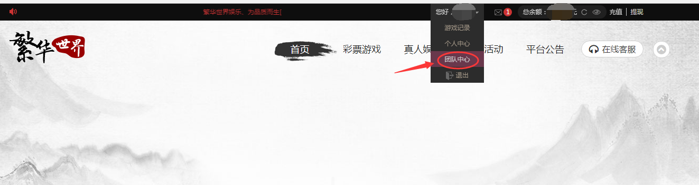
2、在团队中心页面里，找到“下级管理”菜单项，点击进去。然后点击右边的“开户管理”
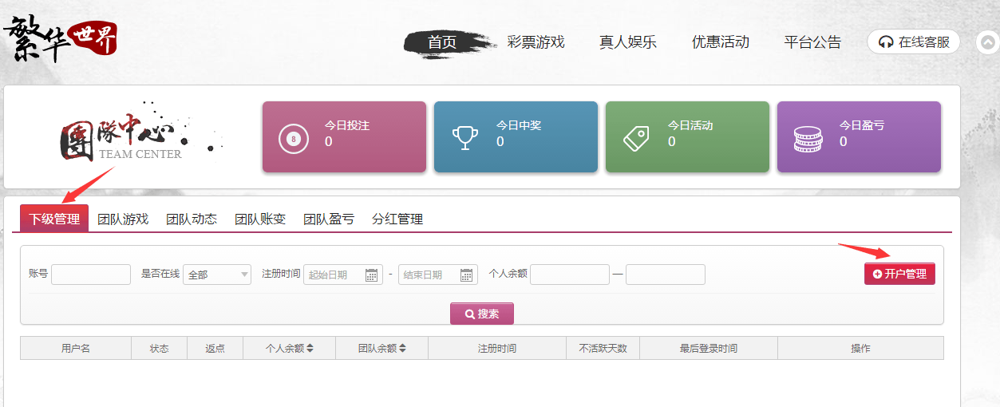
在开户管理页面中，显示两种开户方式：手动开户和链接开户。
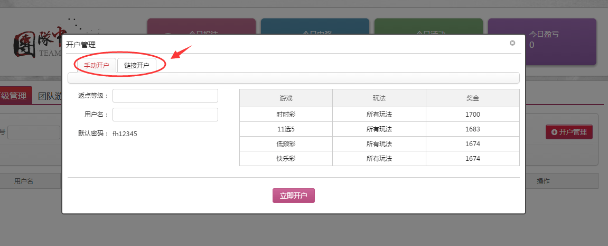
在手动开户页面里，只需您填写好用户名和下级的返点，然后点击“立即开户”，即开户成功。开户都有默认密码，因此无需输入密码。
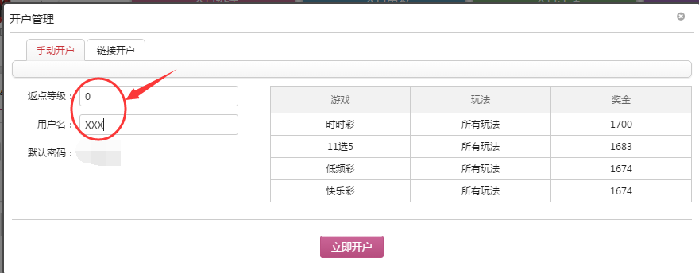
如果您选择“链接开户”，在“开户管理”页面里，点击选择“链接开户”，再点击“新增链接”
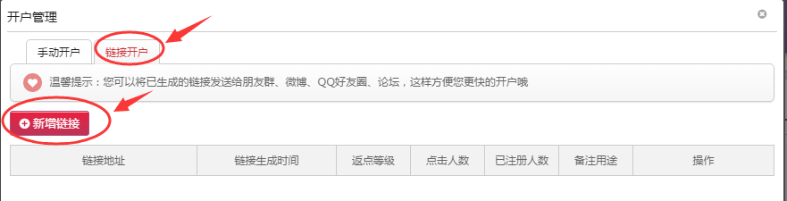
跳出“链接开户设置”页面，填写好下级返点，如果您需要备注什么，在备注方框里填写好需要备注的内容，然后点击“创建链接”，则立刻生成一个开户链接。
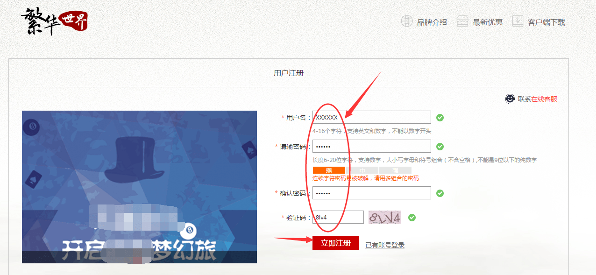
您可以将开户链接的地址复制发给您的下级，下级打开链接以后可以自己填写账号和密码进行账号注册；
1、将鼠标指向导航栏的账户名的位置，会自动出现一列下拉子菜单，找到“团队中心”，点击进去。
2、在团队中心页面，找到“下级管理”菜单项，点击进入；
在下级管理页面中，您可以通过账号、是否在线、注册时间、个人余额等信息查询到下级的情况，并且您可以在这个页面中对下级进行管理。
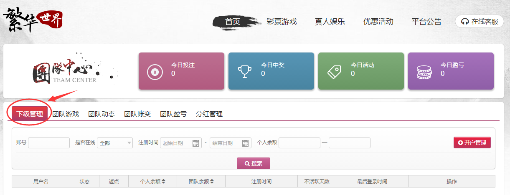
1、将鼠标指向导航栏的账户名的位置，会自动出现一列下拉子菜单，找到“团队中心”，点击进去。
2、进入“团队中心”页面后，您可以通过子菜单查询到“团队游戏”、“团队动态”、 “团队账变”、“团队盈亏”和“分红管理”的内容。
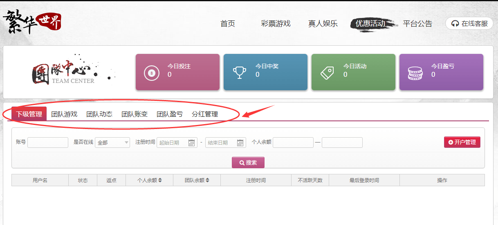
在“团队游戏”页面，您可以查询到彩票投注记录、彩票追号记录以及AG投注记录。
查询方式可以通过投注时间、订单状态、彩种名称、期号、订单编号和账号查询。
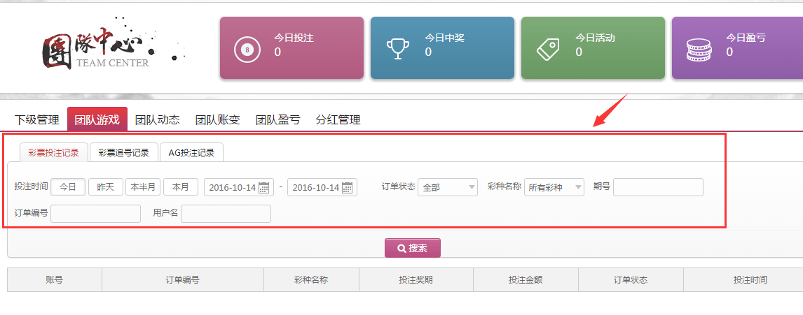
在“团队动态”页面，您可以查询到团队余额、充值、提现、当前在线人数等基本情况，还能查询到团队里的新增下级、不活跃下级都有哪些账号，以及下级玩彩情况、团队充值情况和团队销量，等等信息。
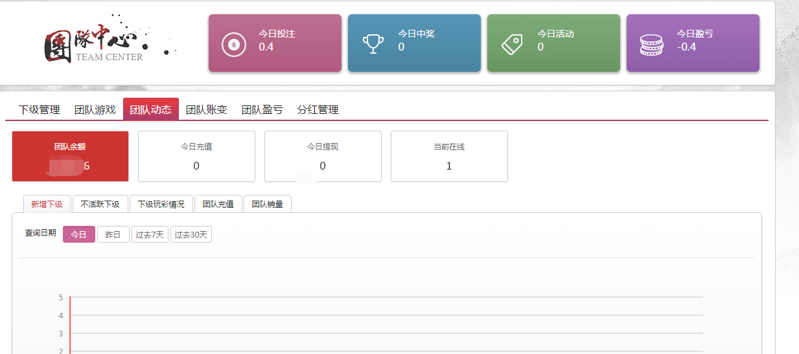
在“团队账变”页面，您可以通过账号、投注时间、流水号和交易类型查询到团队账变情况、团队充值记录和团队提现记录，账户明细只保留30天的数据记录。
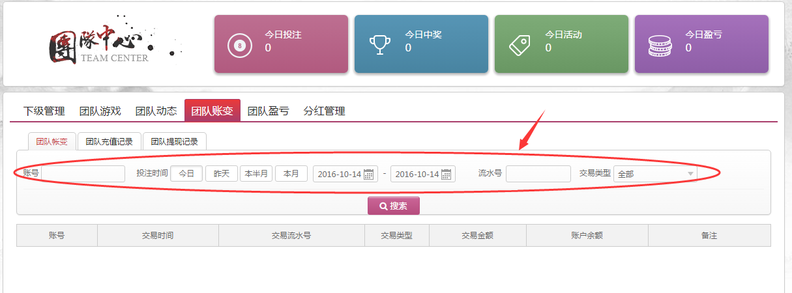
在“团队盈亏”页面，您可以查询到彩票盈亏和AG游戏盈亏的情况。
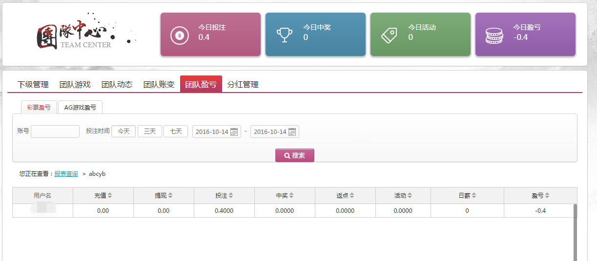
在“分红管理”页面，您可以查询到自己的分红、下级的分红以及对用户分红进行管理。
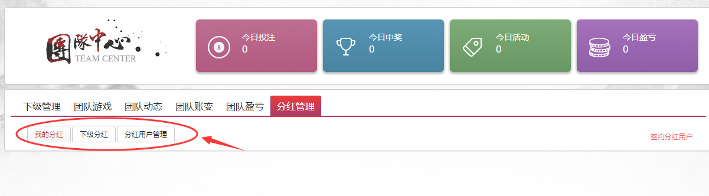
将鼠标指向导航栏的最右端“转账”按钮，点击进去。
进入“转账”页面后，在左侧栏位的一系列下级账号里选择您想要转账的账户名，点击账户名则显示在右侧栏位中。
选择好需要转账的下级账户名后，填写需要转账的金额，并且填写好安全问题的答案，再填好资金密码，点击“确定提交”，则转账成功。